Años de experiencia
Más de una década en derecho civil, sucesorio y migratorio.
España · Italia · Argentina · y trámites en el exterior
Ciudadanías, sucesiones y derecho migratorio, con asesoramiento jurídico claro y acompañamiento en cada etapa para llegar adonde querés estar.
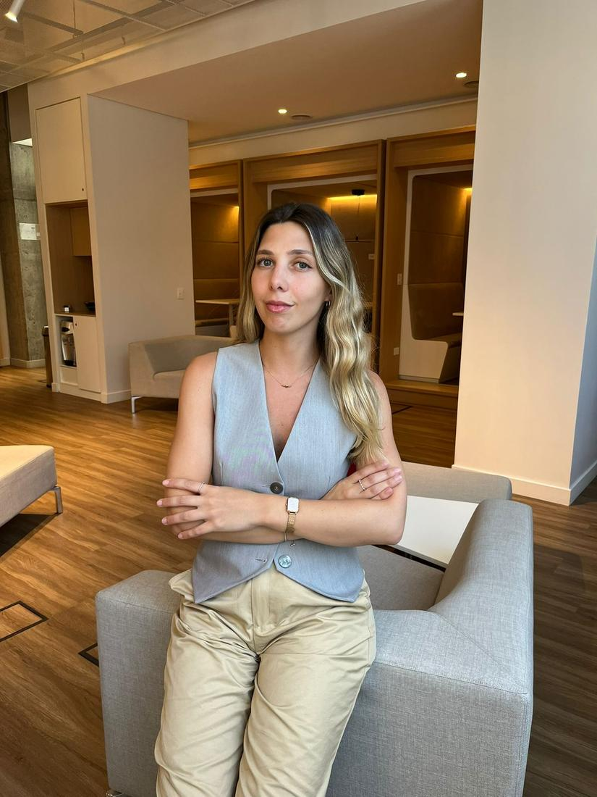
Quiénes somos
Soy Paloma Eugenia Pelegrina, abogada (UNLZ), matriculada en CPACF, CAFLP y CALZ. Al frente del Estudio Jurídico Pelegrina acompaño a personas y familias en Argentina y en el exterior.
Con más de diez años de experiencia en derecho civil, sucesorio y migratorio, combino criterio técnico con un trato cercano: analizo cada caso en profundidad, explico las alternativas en lenguaje claro y trazo un camino concreto para resolverlo.
Nuestros números
Cada caso refleja el trabajo, la experiencia y la confianza que construimos acompañando a cada persona y familia.
Más de una década en derecho civil, sucesorio y migratorio.
Ciudadanías, sucesiones y trámites resueltos con seguimiento profesional.
Española, italiana y argentina, con armado de carpeta y seguimiento.
Cada consulta la atiende una abogada, de principio a fin.
Áreas de práctica
Asesoramiento integral para personas y familias, en Argentina y para argentinos en el exterior. Estas son las áreas en las que más te podemos ayudar.
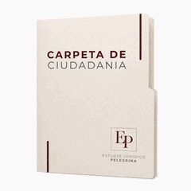
Ciudadanía española e italiana y nacionalidad argentina: análisis de viabilidad, búsqueda y reunión de documentación, armado de carpeta y seguimiento por vía administrativa, consular o judicial.
Visado americano, residencias, radicaciones y regularización migratoria. Trámites de extranjería, pasaportes y expedientes ante organismos y consulados, según tu destino y proyecto.
Inicio y seguimiento de procesos sucesorios: demanda, testimonios, planillas, oficios y escritos. Planificación para ordenar y proteger el patrimonio familiar.
Corrección de errores en partidas y documentos (nombres, fechas, datos), gestión de testimonios y trámites necesarios para que tu carpeta avance sin demoras.
Cómo trabajamos
Un proceso simple y ordenado para que sepas, en cada momento, en qué etapa está tu trámite.
Conocemos tu situación, tus objetivos y los antecedentes de tu caso.
Evaluamos la viabilidad y te explicamos las alternativas en lenguaje claro.
Definimos un plan concreto, los pasos y la documentación necesaria.
Gestionamos cada etapa y te mantenemos informado hasta la resolución.
Nuestro estudio
Te esperamos en nuestras oficinas en el corazón de Buenos Aires, con atención presencial y a distancia.
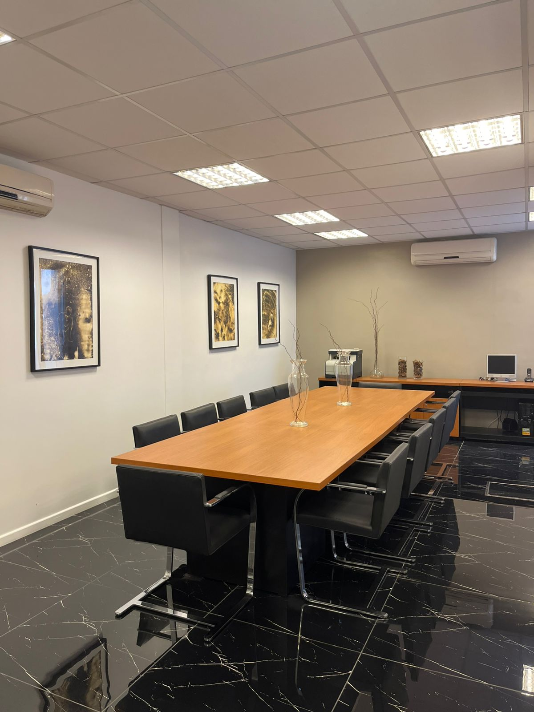
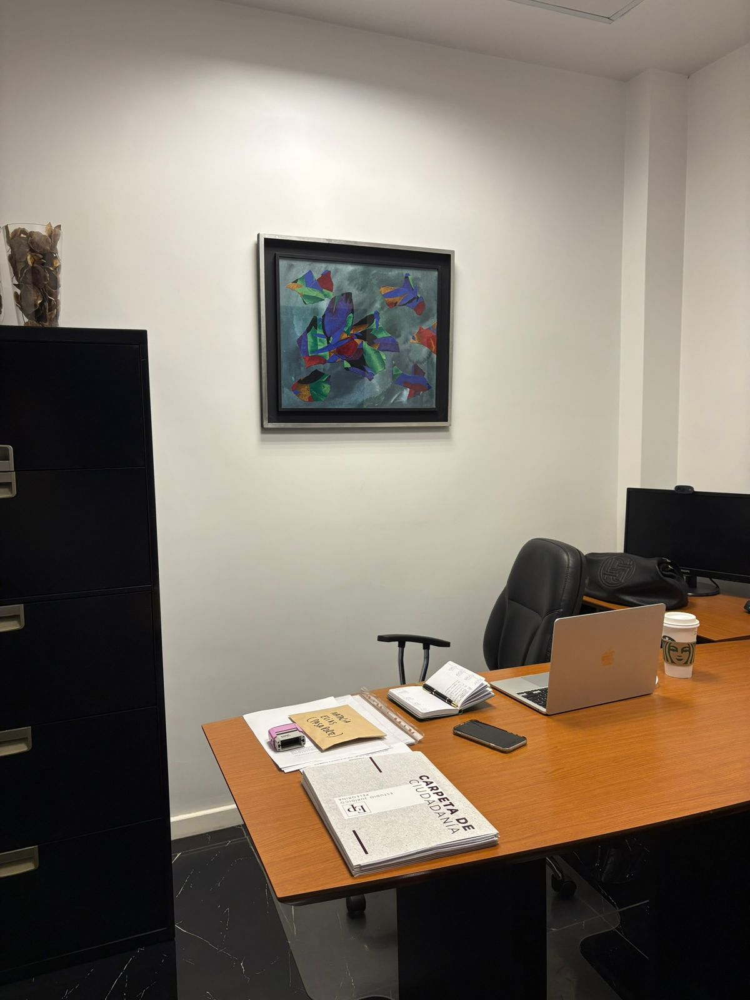
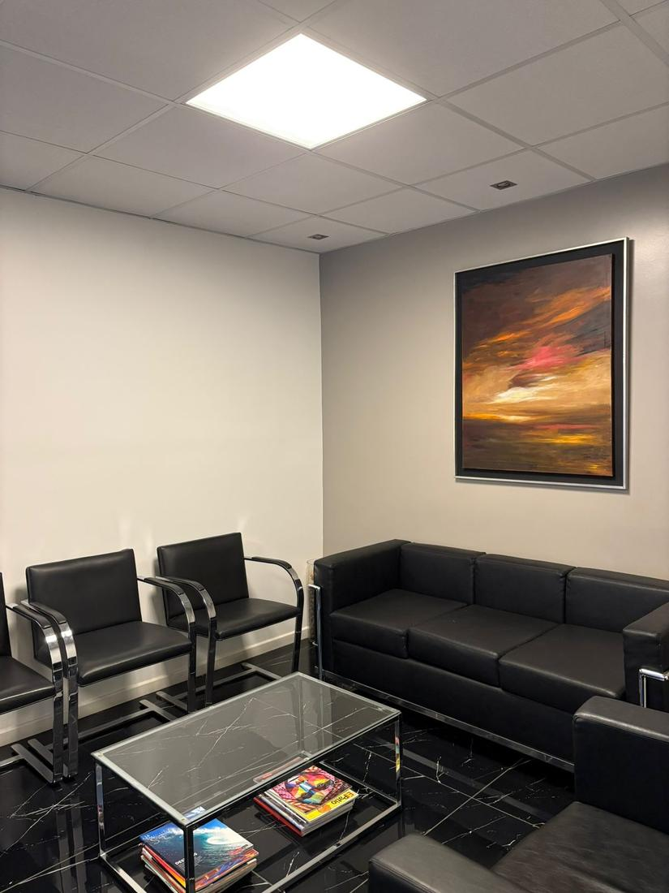
Casos reales
Historias reales de personas que obtuvieron su ciudadanía con acompañamiento, claridad y un equipo que se ocupa de cada detalle.
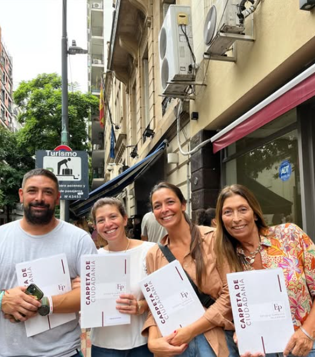
Ethel se presentó como nieta de abuelo materno español por Anexo 1, y sus 3 hijos mayores por Anexo 3. El Consulado permitió el ingreso de todo el grupo familiar pese a tener distintos horarios de cita.
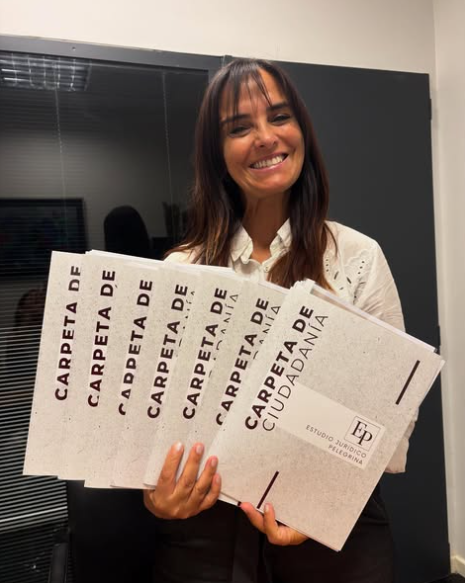
Una carpeta de 13 solicitantes —nietos y bisnietos— por Anexo 1 y 3. Conseguimos en España las partidas de nacimiento y matrimonio, e incluso apostillamos la documentación que faltaba.
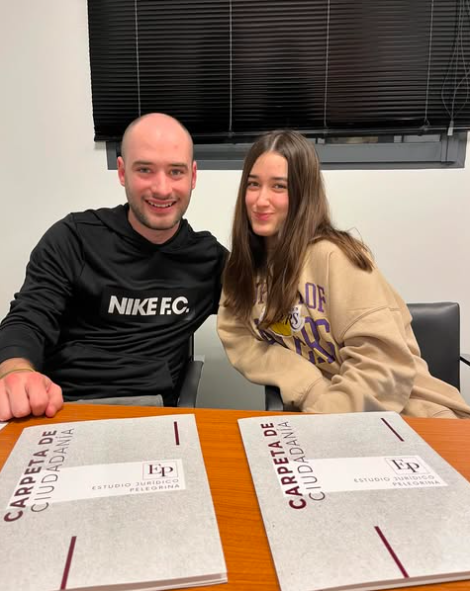
Juan Manuel y Clara se presentaron por Anexo 1 ante el Consulado de España, como nietos de una abuela que recuperó la nacionalidad en 1993. Preparamos la carpeta hasta el bisabuelo español en 4 meses, con partida de España y firma digital válida.
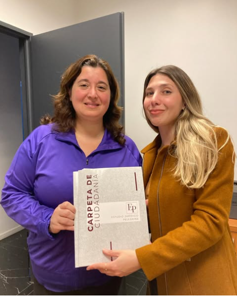
Se presentó por Anexo 1 como hija de argentino nacionalizado español de origen, y su hija por Anexo 3. Recuperamos el usuario y la cita consular que había vencido: hoy, con turno y carpeta en mano, solo resta presentarla.
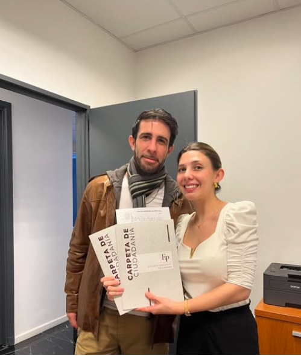
Le habían anulado la nacionalidad tras 10 años por un error. Siendo nieta de españoles e hija de argentina naturalizada española de origen, subsanamos el expediente y obtuvimos las 3 partidas en España.
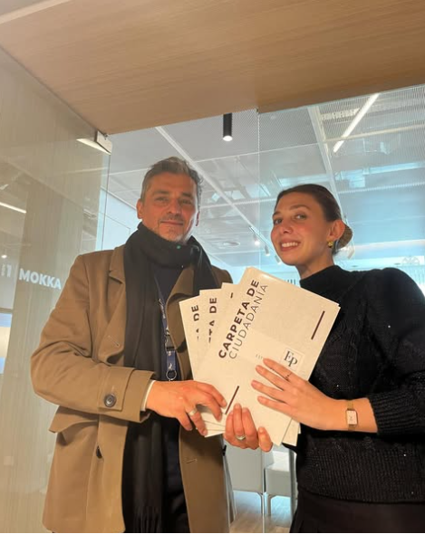
Carpeta de 4 solicitantes, nietos y bisnietos de española no naturalizada argentina. Rastreamos la fe de bautismo de la abuela y, tras 5 meses de armado, se presentan ante el Consulado de España.
Ciudadanías aprobadas, novedades de visados y trámites, y todo lo que hacemos día a día. Sumate a nuestra comunidad.
Preguntas frecuentes
Brindamos asistencia integral en ciudadanía española e italiana, nacionalidad argentina, visados y derecho migratorio, sucesiones, pasaportes y rectificación de actas y documentos. Te guiamos en cada paso, revisamos los requisitos y acompañamos todo el proceso.
Sí. Trabajamos con clientes dentro y fuera del país. Coordinamos la consulta por videollamada o WhatsApp y gestionamos la documentación a distancia, con seguimiento permanente.
El estudio está en Talcahuano 736, Planta Baja al fondo, en la Ciudad Autónoma de Buenos Aires. La consulta puede ser presencial o a distancia, según lo que te resulte más cómodo.
En la primera consulta escuchamos tu caso, evaluamos la viabilidad y te explicamos las alternativas y los pasos a seguir. A partir de ahí definimos juntos una estrategia concreta.
Depende del tipo de trámite y del organismo interviniente. En la consulta te damos una estimación realista y, durante el proceso, te mantenemos informado de cada avance.
Hablemos
Contanos brevemente tu caso y coordinamos una consulta para orientarte con una respuesta personalizada.
Consulta profesional
Sesión de 1 hora. Reservá tu día y horario, aboná la consulta y enviá el comprobante por WhatsApp para confirmar el turno. La atención presencial es solo martes y jueves en Talcahuano 736 (frente a Plaza Lavalle); el resto de la semana, virtual.
⚠️ Si no enviás el comprobante de pago al 11 5403 6933, la consulta no queda confirmada y se da de baja automáticamente.